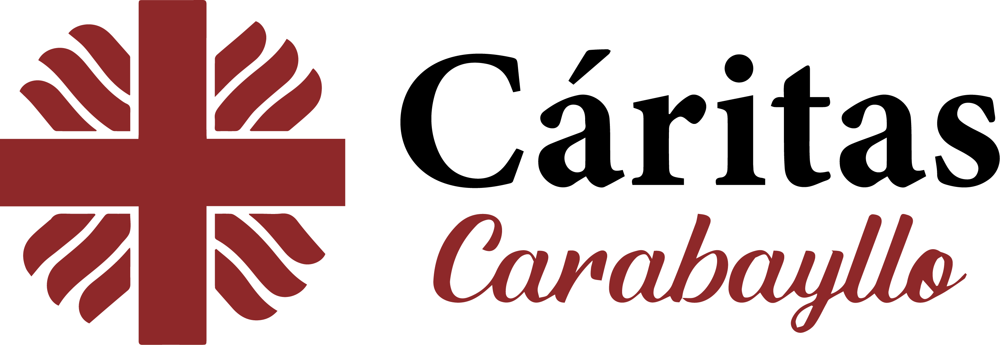
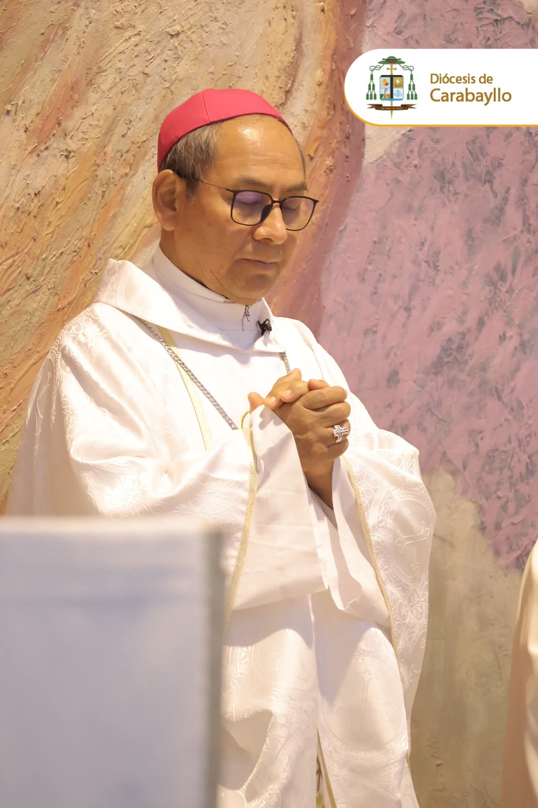
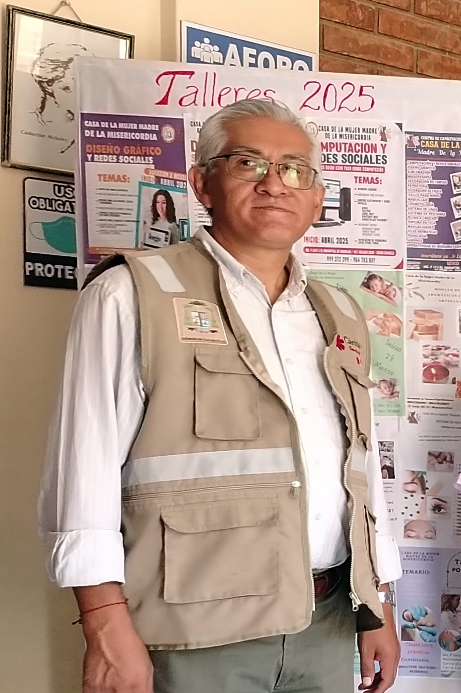
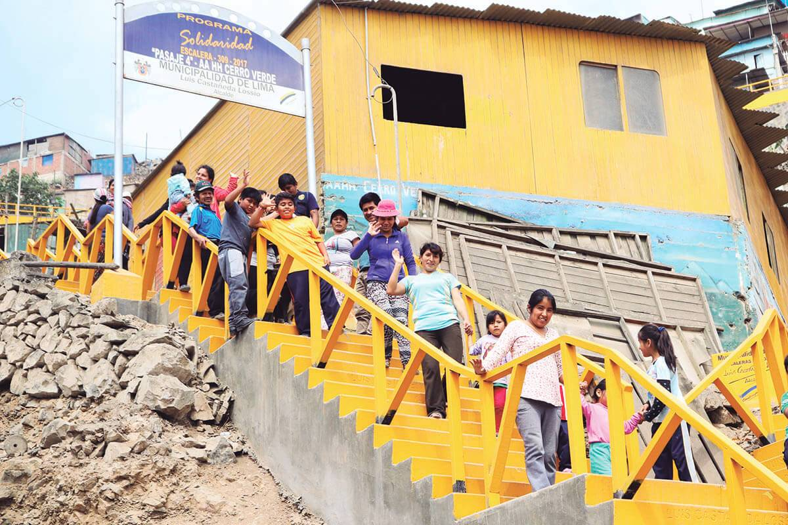
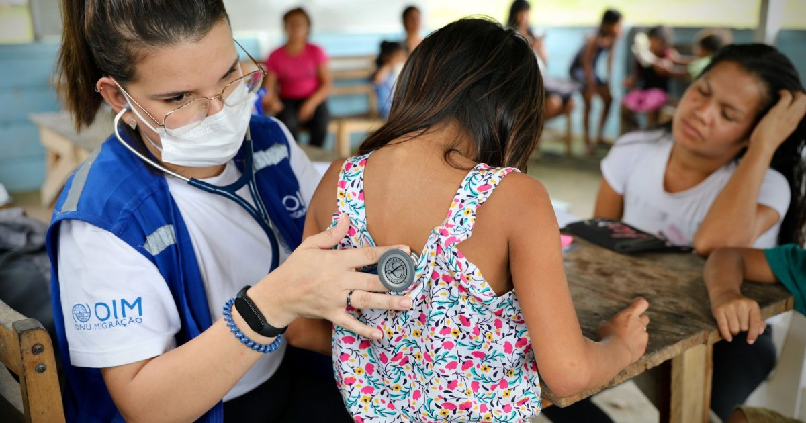

Juntos por una sociedad justa
Programas de apoyo y desarrollo

Programas de apoyo y desarrollo
Cáritas Carabayllo es una organización de la Iglesia Católica fundada para promover y liderar programas, proyectos e intervenciones en favor de las poblaciones más pobres y vulnerables de Lima norte, para facilitar su Desarrollo Humano Integral basado en los principios cristianos de justicia, solidaridad y respeto a la dignidad humana. Desde ......, .
Promueve la misión de la Iglesia católica, en su servicio a los pobres que iluminada por el evangelio y la Doctrina Social de la Iglesia práctica la caridad, promoviendo el desarrollo humano integral sostenible; en especial de las personas en condiciones de vulnerabilidad. Desde el evangelio y la Doctrina Social de la Iglesia Cáritas Carabayllo busca responder a las situaciones de emergencia y vulnerabilidad, promover el desarrollo humano, sostenible e integral; desde las fortalezas (conocimientos y capacidades) de los pobres que sufren desventajas, pero que tienen la fuerza necesaria para mejorar decisivamente su vida; por lo tanto, enfrentar la pobreza y la violencia en alianza con las instituciones de la sociedad civil.
Ser una organización que aporta al bien común y en salida al encuentro del otro para transformar vidas, fortaleciendo las redes humanas de voluntariado, comunidad u otros donde su mayor compromiso misionero sea; ayuda a los pobres y personas vulnerables; sabiendo que un mundo mejor es posible. “El desarrollo de los pueblos depende sobre todo de que se reconozcan como parte de una sola familia”. (El Papa Juan Pablo II)
Esta es tu sección de equipo. Es un gran lugar para presentar a tu equipo y hablar de lo que lo hace especial, como tu cultura y filosofía de trabajo.

Presidente

Tech Lead

Product Manager

Product Designer

23 setiembre, 2025 /// No hay comentarios
En alianza con OIM y Cáritas Chosica en conjunto con Cáritas Carabayllo, se desarrolló el proyecto Cash for rent en el distrito de Comas, con una acogida de más de 250 personas migrantes que acudieron desde las 09.30 am a 12.30 p.m. a las instalaciones de la parroquia ....
Leer más »
16 - 17 diciembre, 2025 /// No hay comentarios
Viendo el espíritu navideño, se pudo realizar dos acciones navideñas con niños desde 3 a 12 años del Distrito de Independencia. Ubicadas en la parroquia Jesús Resucitado, en San Albino se convocó cerca de 68 niños y la parroquia Nuestra Señora del Rosario aproximadamente 105 niños...
Leer más »
07 febrero, 2024 /// No hay comentarios
En alianza y colaboración de Cáritas Lima, Caritas Perú y nuestra Cáritas Carabayllo se desarrolló la convocatoria del proyecto en el distrito de San Martín de Porres. Este proceso es en respuesta a nuevas atenciones para los migrantes tanto a nivel social como apoyo para el alquiler de un cuarto, apoyo en medicamentos y en la parte legal...
Leer más »07 febrero, 2024 /// No hay comentarios
En alianza y colaboración de Cáritas Lima, Caritas Perú y nuestra Cáritas Carabayllo se desarrolló la convocatoria del proyecto en el distrito de San Martín de Porres. Este proceso es en respuesta a nuevas atenciones para los migrantes tanto a nivel social como apoyo para el alquiler de un cuarto, apoyo en medicamentos y en la parte legal...
Leer más »